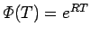

Inhalt Index DeskTop Bronstein

 Dynamische Systeme und Chaos Gewöhnliche Differentialgleichungen und Abbildungen Qualitative Theorie gewöhnlicher Differentialgleichungen Lineare Differentialgleichungen
Dynamische Systeme und Chaos Gewöhnliche Differentialgleichungen und Abbildungen Qualitative Theorie gewöhnlicher Differentialgleichungen Lineare Differentialgleichungen


Betrachtet wird die homogene lineare Differentialgleichung (17.13b), wobei A(t)= [aij(t)]i,j=1n eine T-periodische Matrix-Funktion ist, d.h., es gilt . In diesem Falle nennt man (17.13b) eine lineare T-periodische Differentialgleichung. Dann läßt sich jede Fundamentalmatrix  von (17.13b) in der Form darstellen, wobei G(t) eine glatte, reguläre T-periodische Matrix-Funktion ist und R eine konstante Matrix vom Typ (n,n) darstellt (Satz von FLOQUET).
von (17.13b) in der Form darstellen, wobei G(t) eine glatte, reguläre T-periodische Matrix-Funktion ist und R eine konstante Matrix vom Typ (n,n) darstellt (Satz von FLOQUET).
Sei die bei t =0 normierte Fundamentalmatrix der T-periodischen Differentialgleichung (17.13b) und eine Darstellung laut Satz von FLOQUET. Die Matrix  heißt Monodromie-Matrix von (17.13b); die Eigenwerte von sind die Multiplikatoren von (17.13b). Eine Zahl ist genau dann Multiplikator von (17.13b), wenn es eine Lösung von (17.13b) gibt, so daß gilt.